rocm-cli — proposed UX mockups
Rendered from examples/gen_mockups.rs via a real ratatui framebuffer. See docs/design/ for the annotated rationale.
Surface 2 · bare `rocm` — minimal launcher (model running)
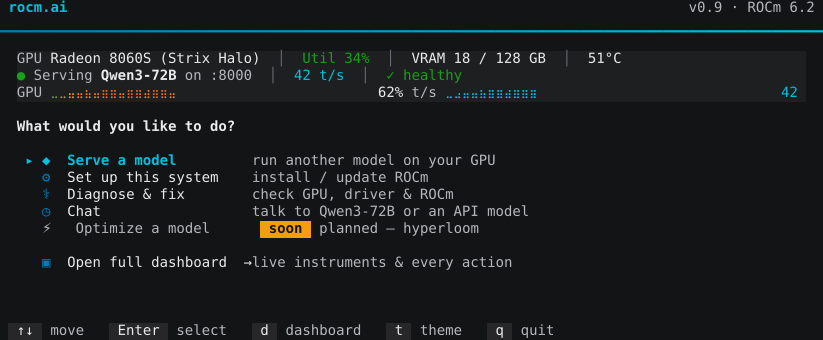
Surface 2 · bare `rocm` — idle (greyed rows teach the unlock)
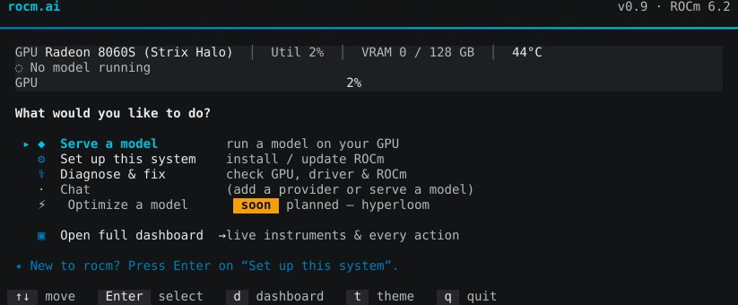
Surface 3 · `rocm dash` — Home landing (bento tiles, outlined tabs)
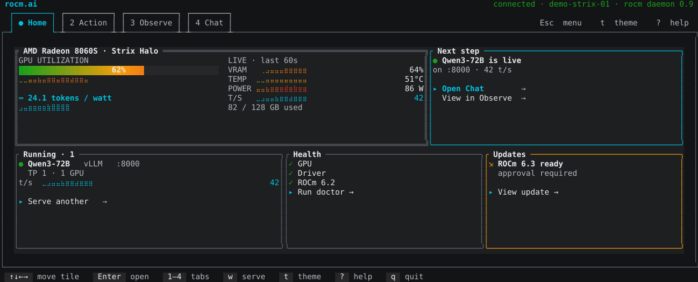
Surface 3 · Home landing — alternate theme (tokyo-night)
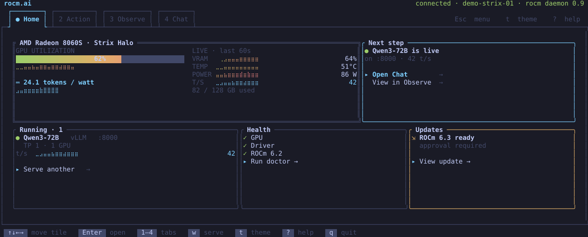
Surface 3 · Action tab — guided workflows as visible tiles
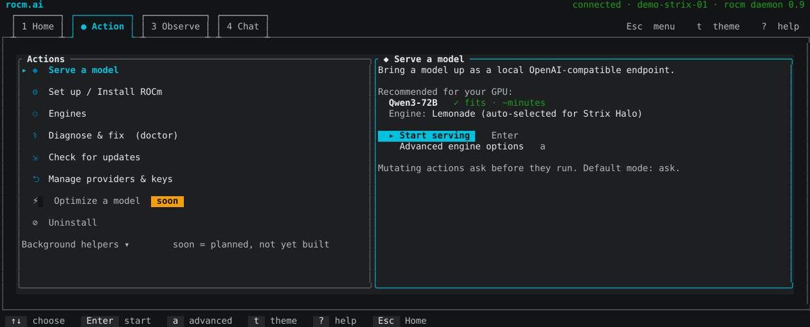
Surface 3 · Observe tab — live instruments + item-action rows
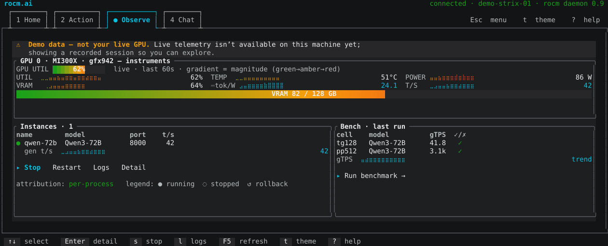
Surface 3 · Chat tab — agent with visible `Plan this` chip
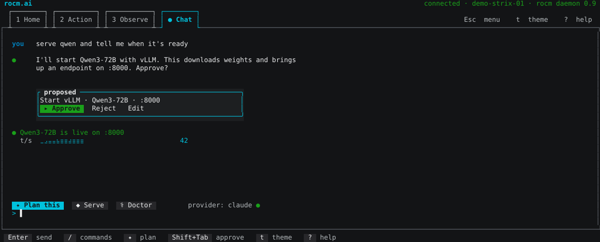
Surface 3 · Command palette (`:`) — universal launcher overlay
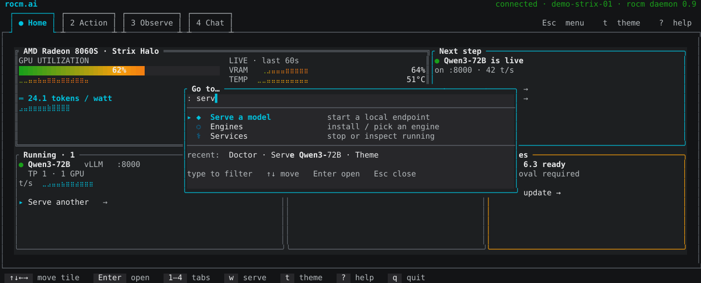
Esc menu — btop-style gradient logo + Options / Help / Quit
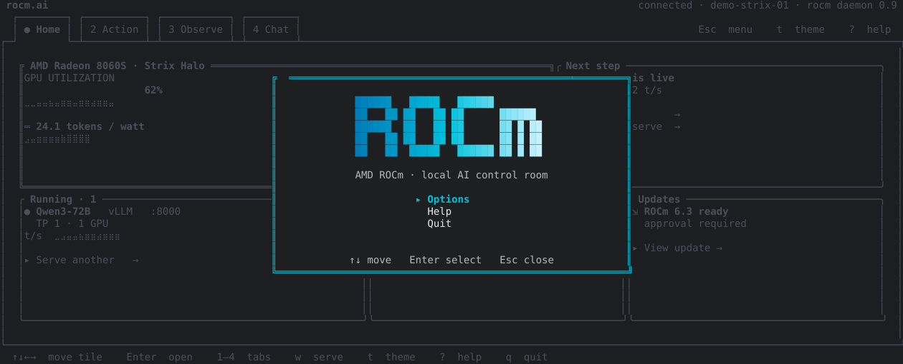
Options — tabbed settings (General · CPU · GPU · Engines)
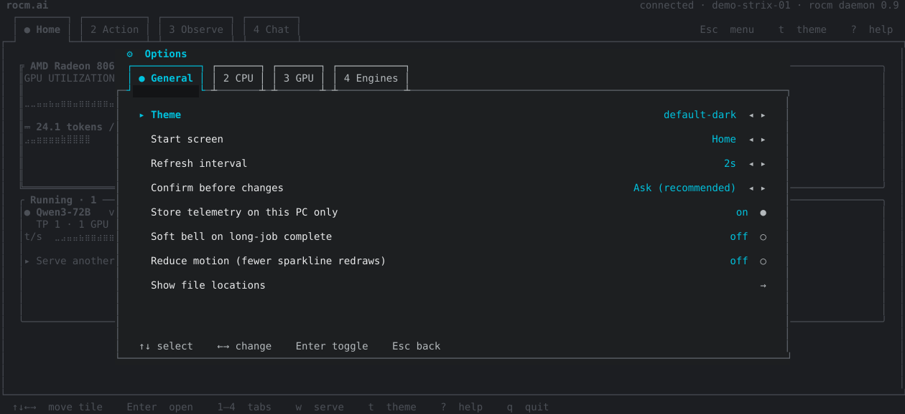
Help — two-column keyboard reference
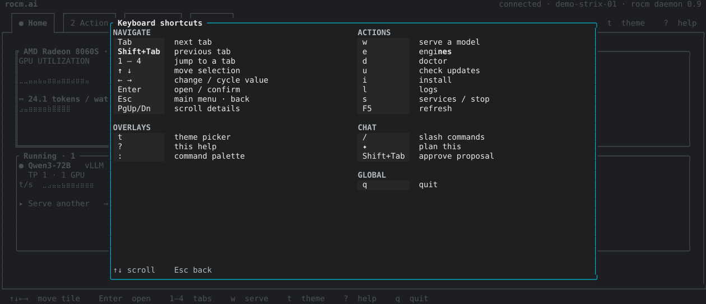
Wide (15″+/27″) · Home — triptych: GPU wall ▏ workspace ▏ assistant
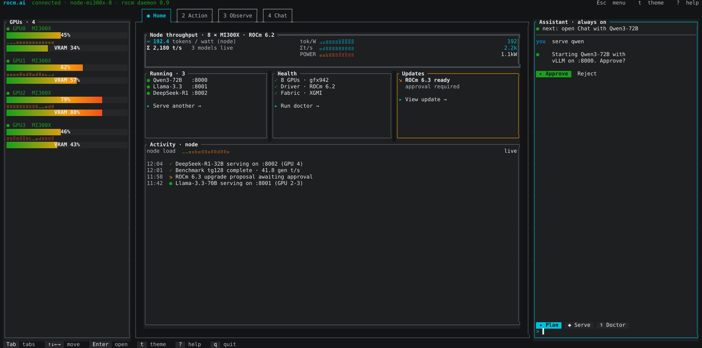
Wide (15″+/27″) · Observe — 8-GPU wall + instances master-detail
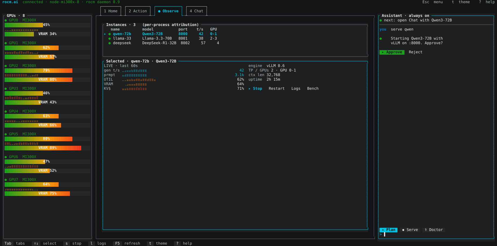
Wide (15″+/27″) · Action — list + live serve wizard side by side
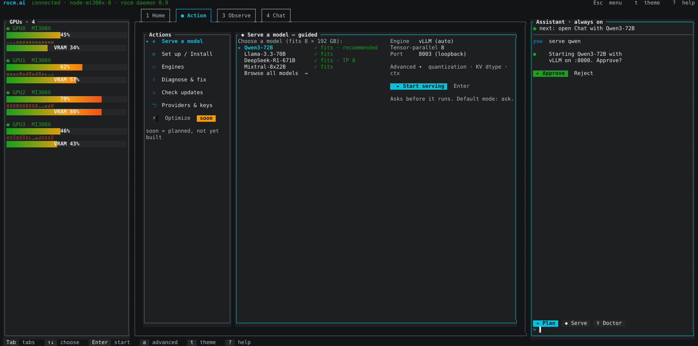
Wide (15″+/27″) · Chat — conversation in center + agent context rail
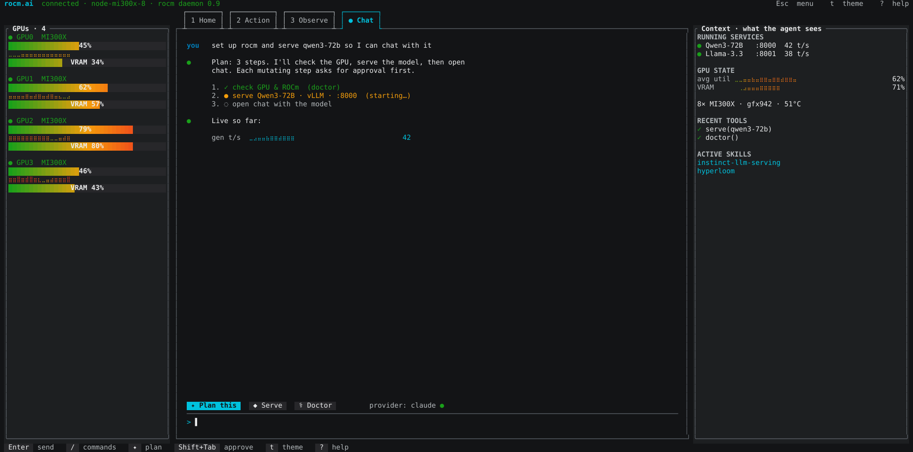
Wide (15″+/27″) · Observe — contextual dock swaps assistant for live logs
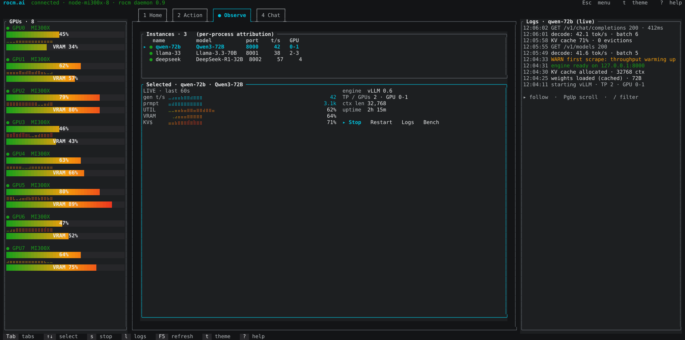